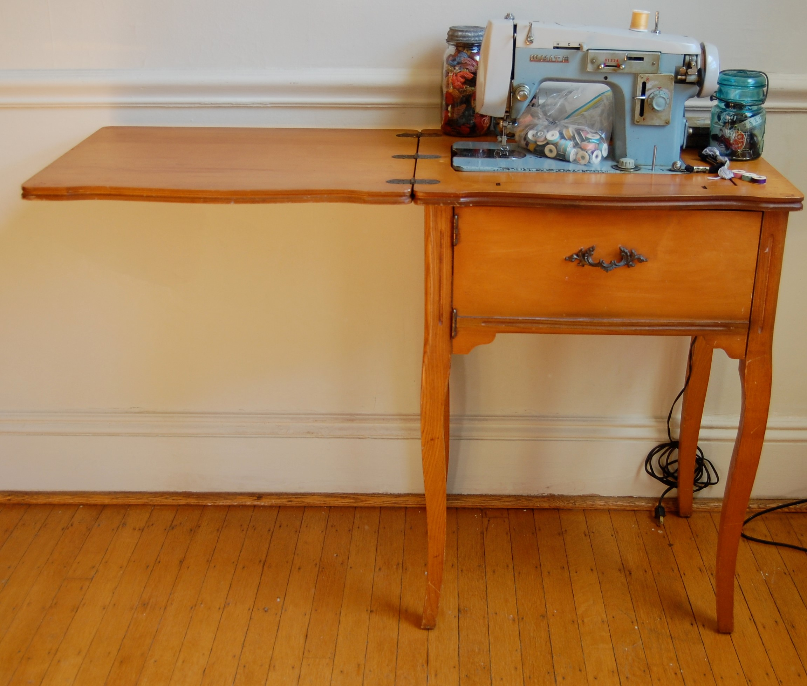
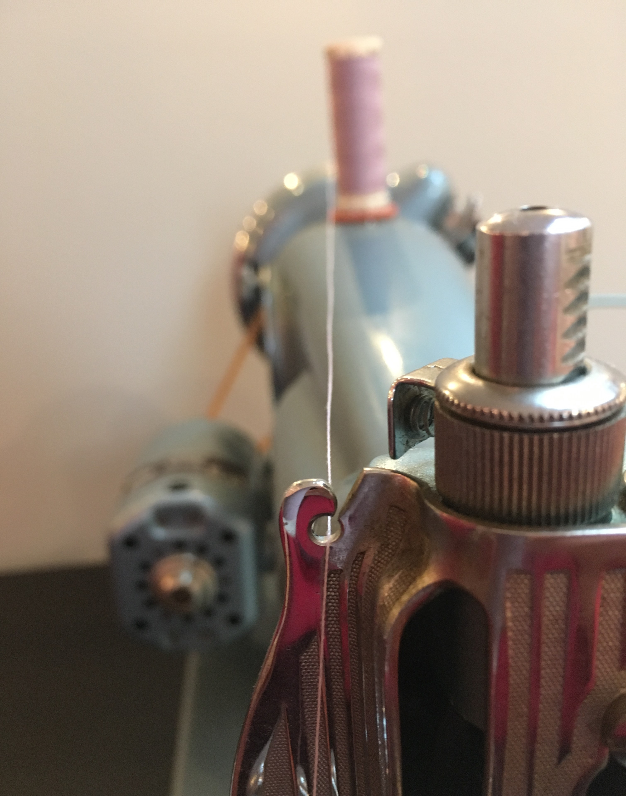
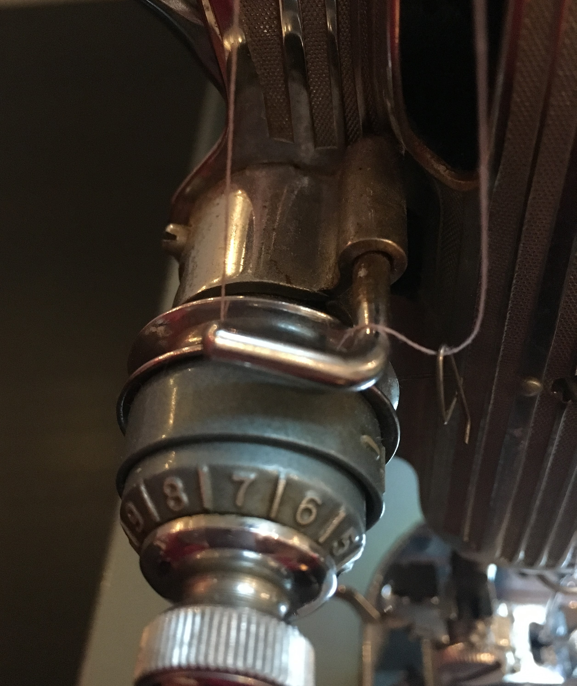
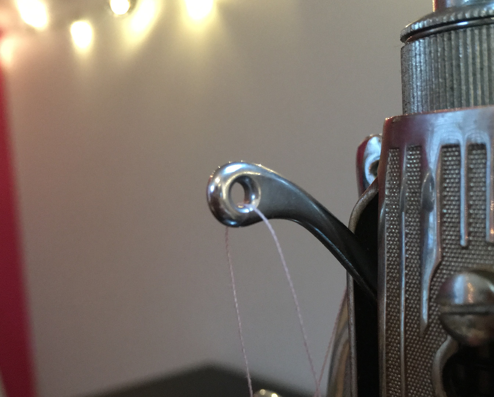
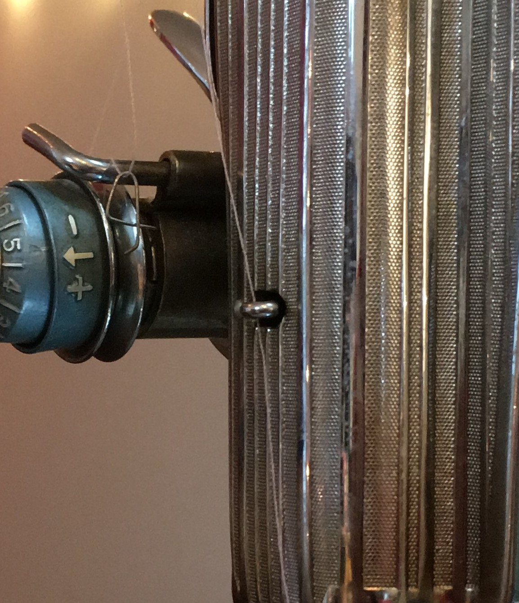
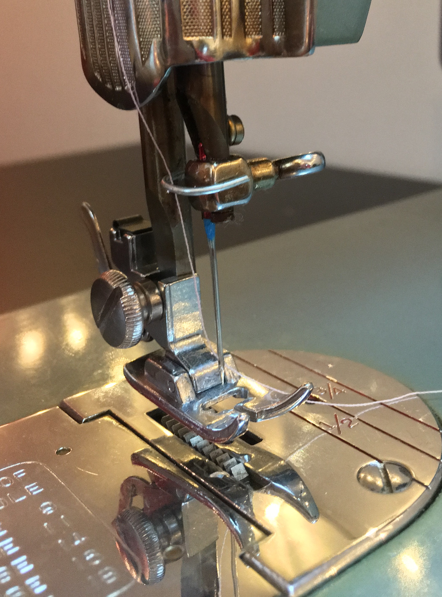
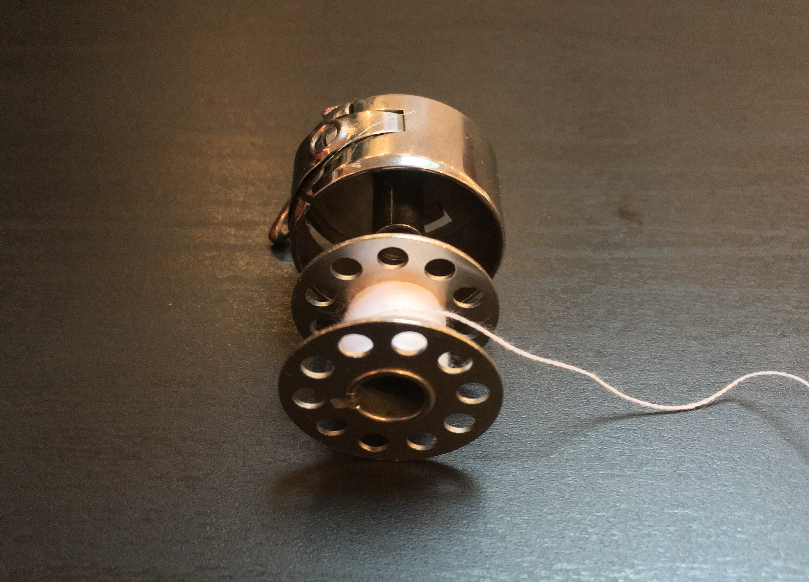
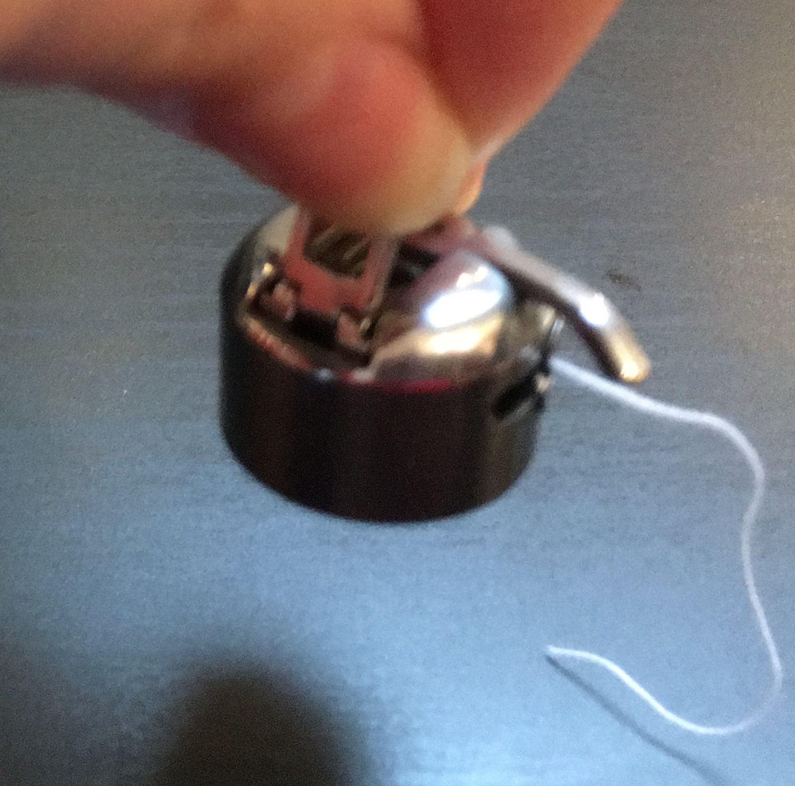
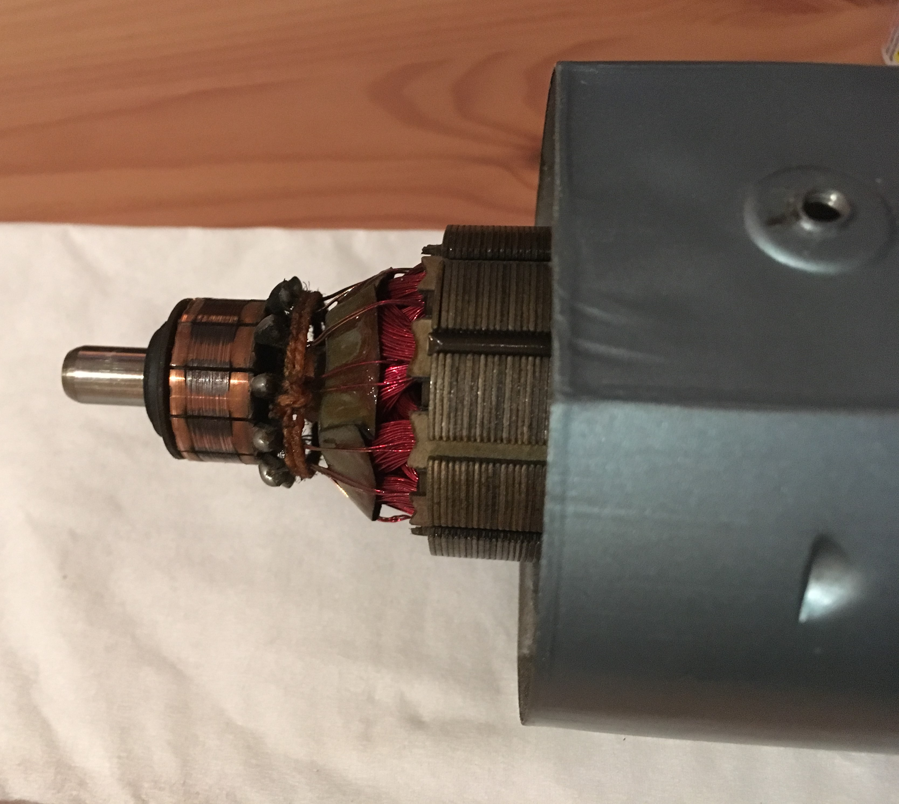

About 10 years ago my father gave me a sewing machine in a cabinet that was given to him for free. The top of the cabinet could be folded up and to the side, revealing the sewing machine that could then be raised up to sit on the table-top. It was something like this:
I had been curious about sewing for many years but had not had time to take up the hobby properly. This machine was also not running for reasons I did not yet understand. Over the years I thought about getting rid of it many times, but found it was useful as a table, so I kept it around. I even used it as a platform for my tiny Christmas tree one year.
When I moved this past summer, my wonderful boyfriend learned about my desire to sew and that I was holding on to this machine that I couldn't use. It needed some repairs and I felt I couldn't afford them at the time. He encouraged me to get it checked out. I took my machine to Yarn Fwd and Sew On on Bank St in Ottawa where I got a quick lesson on how to use my machine from a very helpful staff member. She helped me fix the obvious issues with the machine, which consisted of a worn out tire on the bobbin winder and a new belt for the hand wheel. The parts cost me about $5.
Excited that this repair was so easy, I took my machine home to start using it. I plugged it in, pressed the pedal and heard SCREEEEEECH as the machine struggled to run.
After some searching, I learned that, along with regular needle changes and cleaning out the bobbin case, old sewing machines need to be oiled regularly. Cool. I had some machine oil. From what I read I just had to put it in the oil holes all over the machine. I found some holes on my machine in the locations suggested and squeezed in some oil. I pressed the pedal again and heard SCREEEEEECH. What was I doing wrong? I gave the oil some time to "soak in" or something and tried again, with no improvement. I ran the machine at different speeds trying to figure out where the problem was. It seemed like it was in the arm shaft (inside the horizontal arm along the top).
I decided to shift gears and allow my frustration to go away. I started scrubbing the machine to clean at some dirty spots when suddenly the center of (what I thought was) a fasteners of the machine caved in! It turns out I didn't know where the oil holes were. Here are the locations of oil holes that I found on my machine:
The next time I tried the machine, it ran beautifully. :)
My next task was to figure out how to thread the machine. For this I felt I needed a manual (the usual recommended course of action). I searched for a manual for the machine for a long time with no success (White Sewmaster 470... please pass on any digital copy you may find). I did find some threading illustrations for other vintage machines, and I did some guesswork to come up with the following to thread the top thread (later verified by a fantastic sewing instructor):
With the bobbin on the top spool, bring the thread through the guide on the back of the horizontal arm...
...then down and counter-clockwise through the bottom of the tension disks and over the bar, then through the tension spring by bringing it through right to left (the thread should click in).
Next bring the thread through the eye of the take-up lever, which is the metal thing with the hole in it sticking out the left end of the horizontal arm. The metal panel on the side there is called the faceplate.
Now the thread is brought through the thread guide on the side of the faceplate (it clicks in from front to back)...
...and through thread guide above the needle assembly. To finish, thread the needle from left to right.
Thread the bottom as usual, with the thread end running clockwise when placed into the bobbin casing facing you, as shown below.
Bonus tip, holding the tab on the bobbin casing out prevents the bobbin from falling out while handling.
Bring the bottom thread up as usual, rotating the handwheel towards you until the top thread can be used to pull out a loop of the bottom thread. Now you're ready to sew!
For a while I thought there might be something wrong with the motor. Spoiler alert: the motor was fine. Here's a picture of what it looks like inside:
